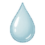
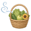

<!-- Compact tending status strip — replaces <section id="needs-card"> (see tend-strip.css). Not interactive. -->
<section id="tend-strip" class="tend-strip" role="status" aria-live="polite" aria-label="Tending" hidden>
    <div class="tend-head">
        <span id="tend-name" class="tend-name">Tomato<small>bed 3</small></span>
        
    </div>
    <div class="tend-row">
        <div class="tend-slot tend-slot--sun" data-need="sun">
              <!-- sun-glow-0..3 / sun-resting at night -->
            <span class="tend-dots"></span><span class="tend-verb">daylight</span>
        </div>
        <span class="tend-divider" aria-hidden="true"></span>
        <div class="tend-slot is-active" data-need="water">
            
            <span class="tend-dots"></span>
            <span class="tend-verb">smile</span>
        </div>
        <div class="tend-slot tend-slot--done" data-need="fertilizer">…<span class="tend-verb">talk</span></div>
        <div class="tend-slot" data-need="stake">…<span class="tend-verb">stretch</span></div>
    </div>
    <div class="tend-harvest">  <!-- shown with .tend-strip--harvest -->
        <div class="tend-harvest-icon"></div>  <!-- add .is-active while breathing is seen -->
        <div><b>Ready to harvest</b><span>Breathe slowly to pick it</span></div>
    </div>
</section>
